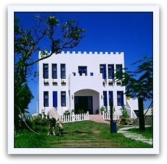
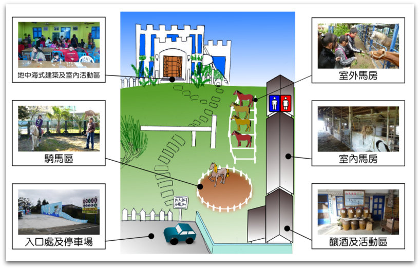
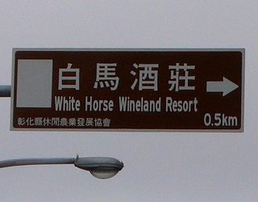
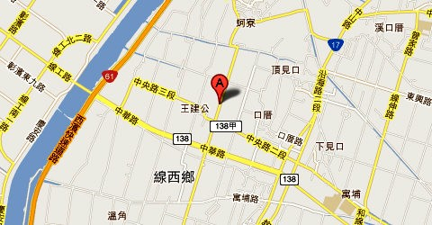

 |
白馬的家，是由白馬酒莊與林家馬場合為一體的，以複合式的經營理念，期待為地方建立產業特色，也為鄉村創造商機。酒莊目前生產講求天然、不加香精之高粱酒、五穀酒等蒸餾酒；以及注重養生、機能性之葡萄酒、桑椹酒、大蒜酒等再製酒。馬場則以育種及繁殖迷你馬為主，並提供騎馬的體驗。並延續早期養鴨的皮蛋、鹹蛋加工之技術，提供遊客各項DIY。
在純樸線西鄉裡有藍天白雲的沙灘海岸，加上藍白地中海綠能建築，吸引了許多遊客前來觀賞，甚至還有新郎新娘來這裡拍婚紗照呢！能讓你放鬆心情，培養感情，這麼好的拍照地點，漂亮的風景，值得你前來觀賞。 (註1) |
園區環境介紹

交通方式
- 若您開車前來，從台61線西濱快速道路的線西交流道下後，轉中華路（138線）往市區方向約3.0K處便可以看到白馬酒莊指標。
- 若從台17線約25K轉中華路(138線)往海邊方向約3.5K處便可以看到白馬酒莊指標。
 |
 |
開放時間及價位
- 每日08:00-18:00，開放入園及品酒
- 體驗及各項活動，須事先準備，請先預約
- 入園最低消費：大人50元、小孩30元
- 半日遊:300元/人（包含鹹蛋、製酒、騎馬體驗）
- 鹹蛋DIY：100元/人
- 製酒DIY：100元/人
- 騎馬體驗：小孩10分鐘100元
聯絡方式
◎註1：簡介內容參考引用自「白馬的家部落格」, http://tw.myblog.yahoo.com/white-horse；地中海建築照片由「白馬的家」林進行先生提供，並授權使用
。
▲TOP |
|